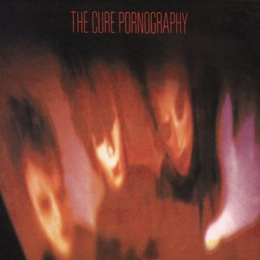

Pornography
Lanzado el 4 de mayo de 1982
Reseña
El cuarto álbum de la banda cierra la llamada "trilogía oscura" que habían empezado con Seventeen Seconds y Faith. Fue grabado entre enero y abril de 1982, en una época en la que Robert Smith atravesaba un fuerte desgaste emocional, y se nota: es un disco asfixiante, con baterías tribales, un bajo opresivo y una voz que suena desesperada y lejana.
Arranca con uno de los versos más desoladores de su carrera, una frase sobre la muerte que marca el tono de todo el disco, y casi no da respiro. Aun así, se convirtió en su primer disco en el Top 10 británico y hoy es considerado un hito en el desarrollo del rock gótico. Fue además el último álbum con Lol Tolhurst en la batería: a partir de ahí pasó a los teclados.
Lista de temas
- One Hundred Years
- A Short Term Effect
- The Hanging Garden
- Siamese Twins
- The Figurehead
- A Strange Day
- Cold
- Pornography

Ficha técnica
Pornography, 1982
- Lanzamiento
- 4 de mayo de 1982
- Sello
- Fiction Records
- Producción
- Phil Thornalley y The Cure
- Grabación
- RAK Studios, Londres
- Duración
- 43:30 minutos
- Repercusión
- Puesto 8 en el ranking de álbumes del UK